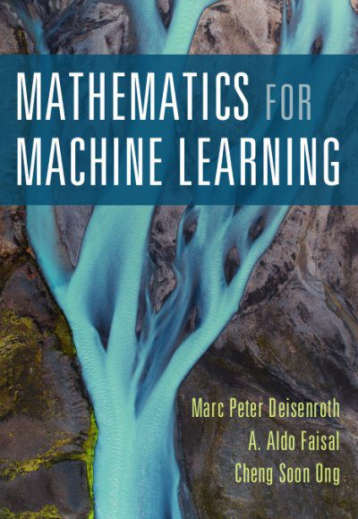

It's no secret that mathematics is the foundation of machine learning, and is vital to your understanding of the underpinnings of the field. In order to succeed as a machine learning practitioner, knowledge of the applicable mathematical foundations are absolutely necessary. Where can you turn to brush up on your machine learning maths, or strengthen your understanding by extending that base?
Mathematics for Machine Learning is a book by Marc Peter Deisenroth, A Aldo Faisal, and Cheng Soon Ong, with the goal of motivating people to learn mathematical concepts, and which is published by Cambridge University Press. According to the authors, the goal of the text is to provide the necessary mathematical skills to subsequently read books on more advanced machine learning topics.
Directly from the pages of the book:
While machine learning has seen many success stories, and software is readily available to design and train rich and flexible machine learning systems, we believe that the mathematical foundations of machine learning are important in order to understand fundamental principles upon which more complicated machine learning systems are built. Understanding these principles can facilitate creating new machine learning solutions, understanding and debugging existing approaches, and learning about the inherent assumptions and limitations of the methodologies we are working with.